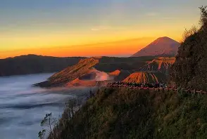
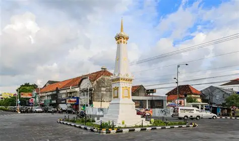

Popular Destinations

Bromo
Lautan pasir luas dan budaya Tengger yang autentik untuk dijelajahi.

Malioboro
Warisan budaya Jawa dan keramaian pusat kota untuk disaksikan.

Museum Angkut
Koleksi mobil antik dunia dan sejarah transportasi untuk dipelajari.

Nusa Penida
Tebing karang yang megah dan air laut biru kristal untuk dijelajahi.